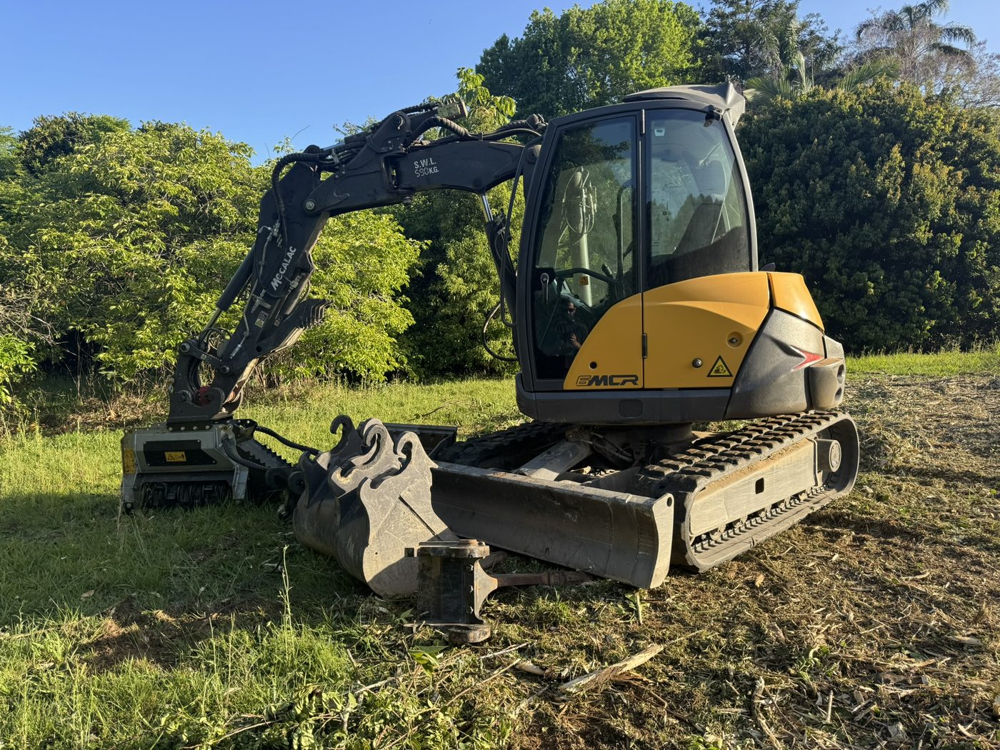
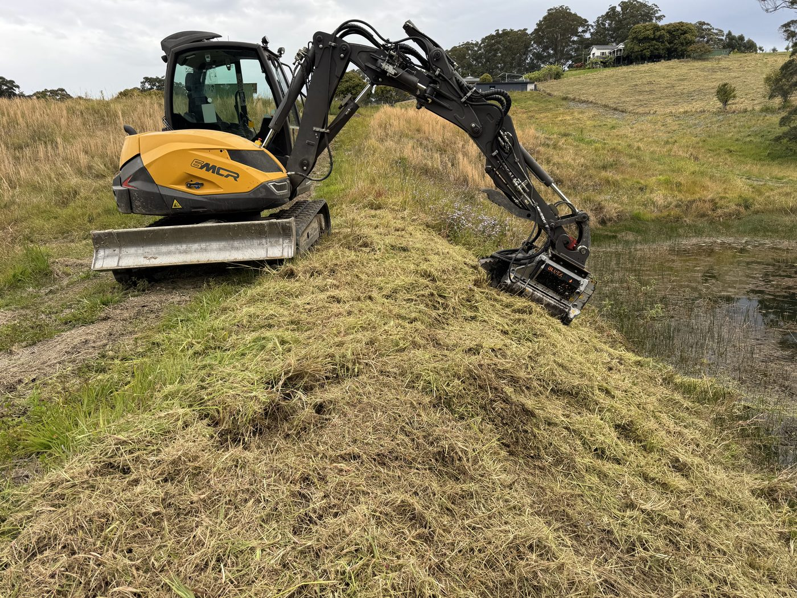
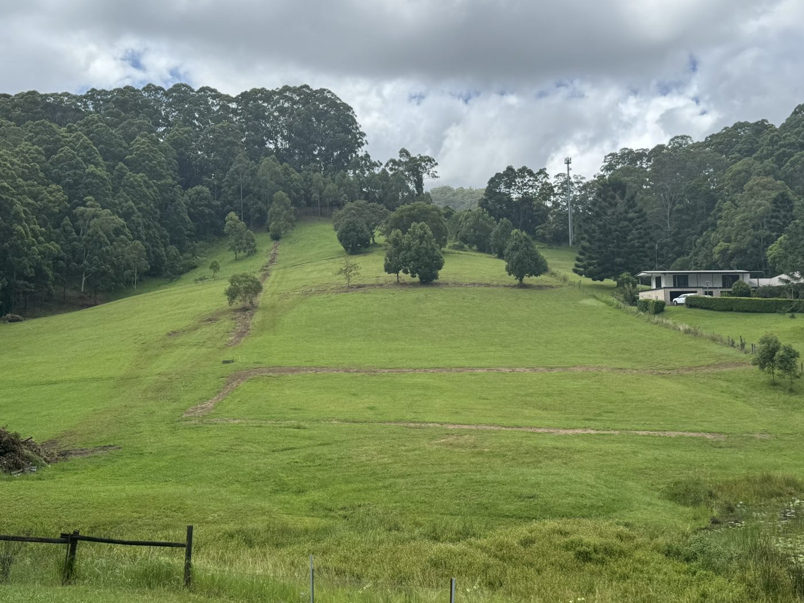

Forestry mulching for Bonville, Coffs Harbour, Bellingen and Nambucca. We turn lantana, camphor laurel, regrowth and scrub into ground-cover mulch on the spot — no burn pile, no cartage, no mess left behind.
Forestry mulching clears vegetation and mulches it in a single pass. A mulching head takes down scrub, regrowth and small trees and grinds them straight into a layer of mulch across the ground — instead of dozer-and-burn, or clearing then trucking the debris away.
For rural blocks on the Coffs Coast that means a cleaner, faster job with a few real advantages:
Because BFEx also runs the excavator and tipper, we can clear, mulch, dig and prep as one team on one job — you're not chasing three different contractors to get a block ready.
Forestry mulching and scrub clearing on Yarraman Road, Bonville, dam-bank mulching on North Boambee Road, Coffs Harbour, and a hillside brought back to clean paddock. A few of the local blocks we've cleared.



We're based in Coffs Harbour — closer to most Coffs Coast blocks than the dedicated mulching brands based hours south.
Just south of Coffs. Regrowth, fenceline and small-acreage clearing, plus firebreaks — often same-week.
Rural blocks around Boambee, Coramba Road and the North Boambee valley — scrub knockdown, weed clearing and site prep.
Acreage clearing and access work through the Bellingen Shire, from Old Coast Road to the river flats.
Hobby-farm and rural clearing south and up on the plateau — quoted per job for the extra travel.
It's priced per job after a look at the block — density of vegetation, slope, access and area all change the time on site. Send a few photos and the address and we'll give you an honest quote, no obligation.
Usually not — the whole point of mulch-in-place is that the material stays on the ground as cover. If you'd prefer it cleared or stockpiled, we can do that too with the tipper — just say so in the quote.
It depends on the block, the vegetation and why you're clearing. Routine maintenance, 10/50 asset-protection clearing and firebreaks often don't, but some clearing does. We'll flag anything that looks like it needs a check before we start — we don't want you caught out.
From a single overgrown fenceline or house block up to multi-hectare paddocks. For very large or steep jobs we'll talk through the best approach on a site visit.